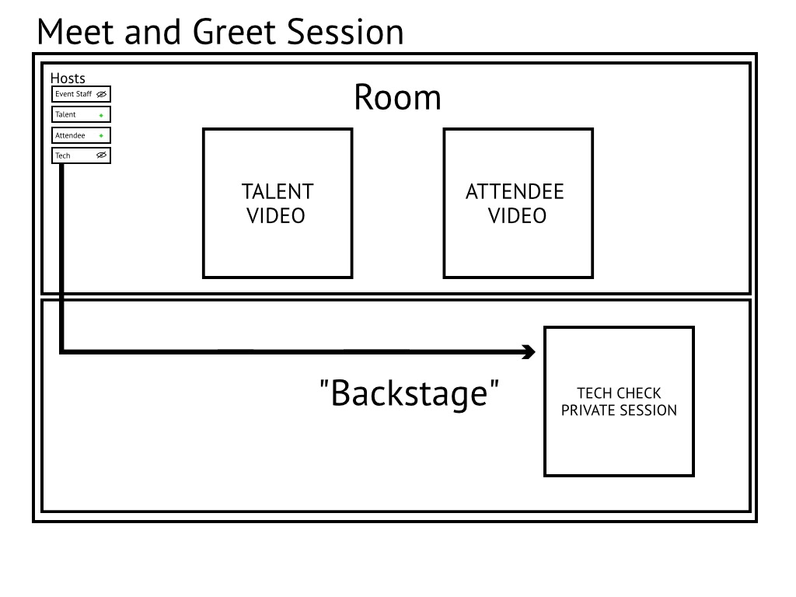

HostsLast updated: September 23rd, 2020
In every room there are a varying number of hosts which typically consist of event staff members, the talent, the talent's agent, and a tech. The number of hosts and the host's titles can vary quite a bit but this example represents the most common situation for any given meet and greet. Virtual Meet & Greets allow customers to purchase tickets to have a one-on-one conversation with the celebrity of their choice. This guide will walk you through understanding the basics of how this functionality works.
Hosts are uniquely identified in the room by using the host link that was created for them. Host links can be created in the Advanced Features section of a product.
Note
Attendees will show up on the list of hosts once they've been let into the room to begin their session. They will not have any controls that the rest of the hosts have. Two additional buttons will are attached to their name which send them back to the lobby or to manually finish their session.
Moderator
Personnel assigned by the event organizer to act as the primary supervisor for any given session. This person will always be in the room to communicate with the talent and also usher attendees into their session. They can also add time to sessions in order to avoid an abrupt end to a conversation and sometimes have been trained to perform tech checks if required.
Talent
The celebrity that the customer's have purchased tickets to have a one-on-one conversation with. The talent does not let customers into the room nor do they adjust any of the room's settings. They can communicate with the event staff directly in between sessions.
Tech
Like mentioned on the last page, there is a specific set of criteria that the customer has to meet in order to be considered as approved to have their session with the talent.
AreasLast updated: September 15th, 2020

There are two "areas" that make up a Virtual Meet & Greet, which we'll outline below. Both the Room and Backstage server a specific function.
Note
The only way to communicate with other hosts who are in the opposite area of you is via the Host Chat
e.g.. A host in the Room cannot speak to or see the video feed of a host that's Backstage.
Room
This is where the actual one-on-one conversation takes place. Any hosts in the room are able to communicate with each other either by audio/video or through the host chat. It's most common that the event staff, talent, and anyone except for the tech to be in the room for the entire session. Hosts in the room cannot communicate with hosts who are "backstage" other than through the host chat.
Backstage
If you have not joined the room but you have loaded the session then you are considered to be in backstage. Your name will appear on the list of hosts but you cannot communicate with them over audio/video unless you join the room. Backstage is where the assigned tech will reside for typically the entire meet and greet session. This is where tech checks will be performed. Hosts that are backstage can only communicate with hosts in the room via the host chat.